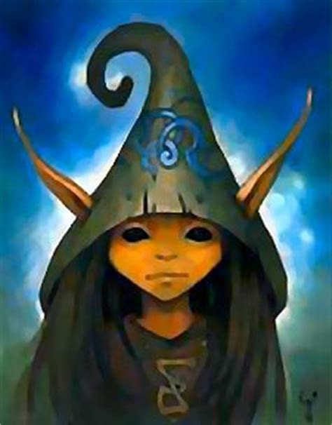

A lutin (French pronunciation: [lytɛ̃]) is a type of hobgoblin (an amusing goblin) in French folklore and fairy tales. Female lutins are called lutines (French pronunciation: [lytin]). A lutin (varieties include the Nain Rouge or "red dwarf") plays a similar role in the folklore of Normandy to house-spirits in England, Germany and Scandinavia. Lutin is generally translated into English as: brownie, elf, fairy, gnome, goblin, hobgoblin, imp, leprechaun, pixie, puck, or sprite. It sometimes takes the form of a horse saddled ready to ride, and in this shape is called Le Cheval Bayard. Lutins sometimes tangle people's or horses' hair into elf-locks. A French fairy tale, "Le Prince Lutin", written in 1697 by Marie Catherine d'Aulnoy has a description of the "air, water and terrestrial lutin": "You are invisible when you like it; you cross in one moment the vast space of the universe; you rise without having wings; you go through the ground without dying; you penetrate the abysses of the sea without drowning; you enter everywhere, though the windows and the doors are closed; and, when you decide to, you can let yourself be seen in your natural form."In this story a red hat with two feathers makes the lutin invisible
Belief in lutins also spread to North America, particularly the Canadian province of Quebec, as spirits in the form of either pets (such as dogs or rabbits) or other common animals. Completely white cats are especially considered likely to be lutins, although seemingly any distinctive animal that lives in or near the home may be regarded as such. These lutins may be good or evil, with good lutins being attributed powers ranging from control of the weather, to shaving the beard of the master of the house before he woke on Sundays. Evil or offended lutins may harass the house-owner with any number of minor troubles, such as blunting a scythe or filling shoes with pebbles. Salt is considered abhorrent to them, and they are thought to go out of their way to avoid crossing it when spilled on the ground.
The Nain Rouge appearance is said to presage terrible events for the city. The Nain Rouge appears as a small childlike creature with red or black fur boots. It is also said to have "blazing red eyes and rotten teeth." (Skinner 1896)